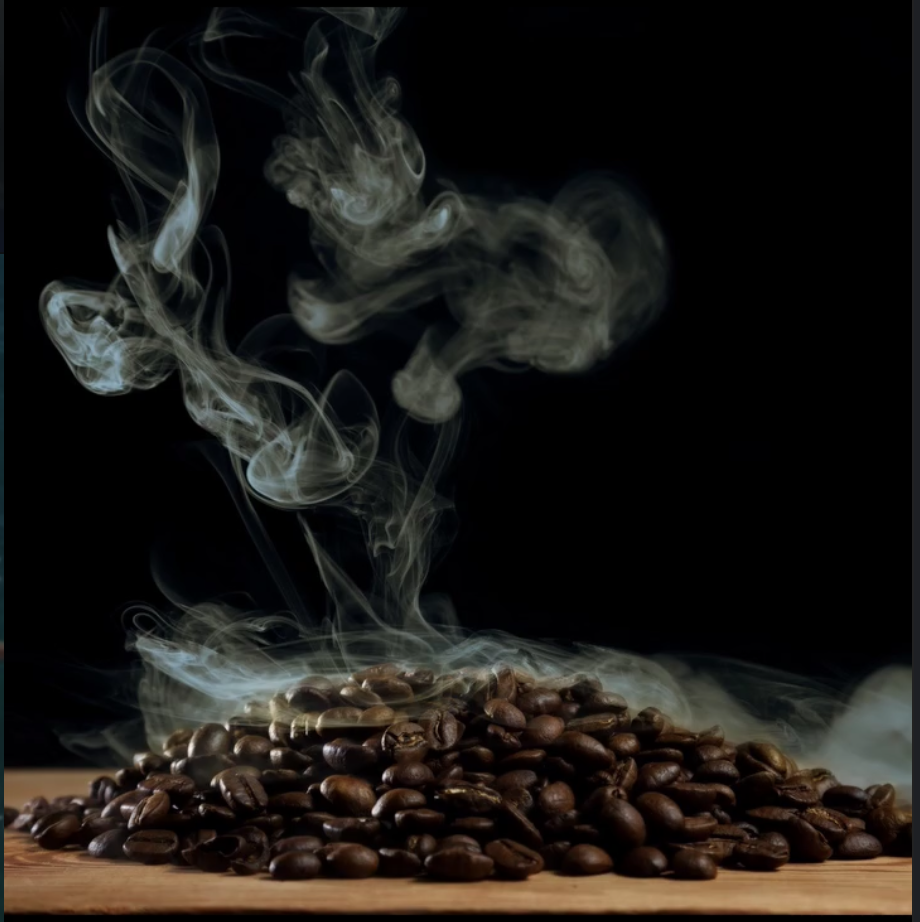

In the Dominican Republic's highest mountain range, where the clouds settle between the peaks, Manabao coffee has been cultivated for generations. Our farmers work at elevations above 1,200 meters, hand-picking only the ripest cherries from volcanic soil that gives each cup its distinctive depth and character.
Every batch is micro-lot processed, sun-dried on raised beds, and roasted in small quantities to preserve the terroir of the Dominican highlands.
Tasting Notes: Dark chocolate, toasted walnut, brown sugar with a smooth, full-bodied finish.
Process: Washed • Altitude: 1,400m • Varietal: Typica
"Manabao is what coffee should taste like — honest, complex, and deeply rooted in its origin. A revelation in every cup."
Coffee Review Magazine
"The kind of coffee you slow down for. Rich volcanic character with an elegance that lingers."
James Alderton, Specialty Roaster
"From the mountains to the cup, you can taste the care in every step of the process."
Dominican Coffee Collective